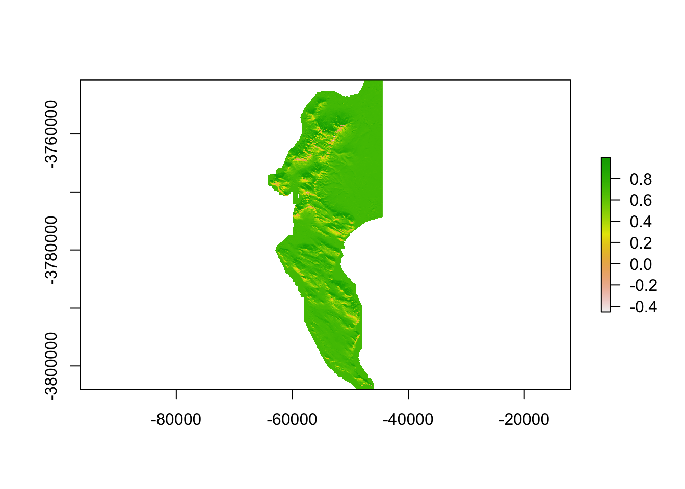
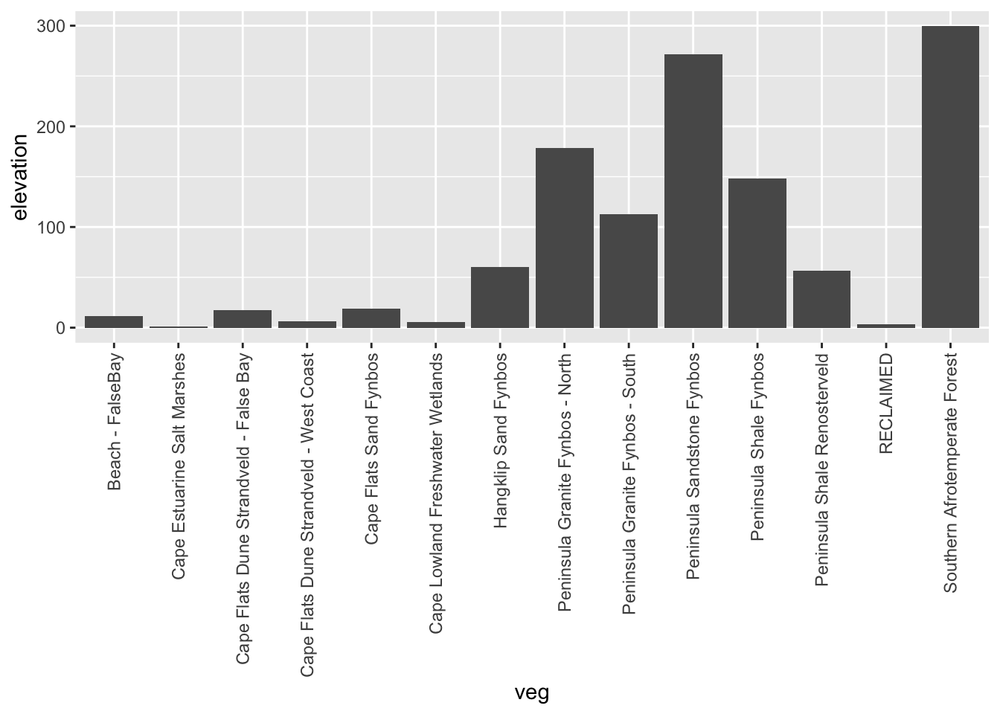
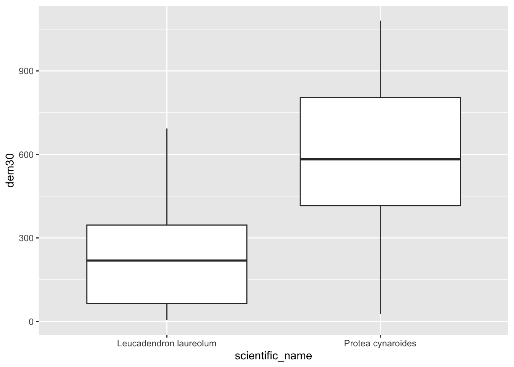

9 Raster GIS operations in R
WARNING!!! READ THIS!!! This section focuses on
library(raster)which is being phased out and will not be maintained in the long term. This is because it relies on other packages that are no longer maintained, because their creators have retired. I usedrasterin the first iteration of these notes so I’ve kept this section for posterity and for those who rely on it, but will remove it in the next year or so. I strongly recommend you ignore this section and move on to the next, which focuses on the new replacementlibrary(terra)! I have kept to the same set of examples in that section, and many of the function names are the same or similar, so shifting toterrashould be easy.
9.1 Reading in data
Ok, now to look at handling rasters. As with sf, the raster package has one function -raster()- that can read in just about any raster file format. Let’s get started and read in the digital elevation model (DEM) for the City of Cape Town.
library(raster)
dem <- raster("data/cape_peninsula/CoCT_10m.tif")
class(dem)## [1] "RasterLayer"
## attr(,"package")
## [1] "raster"dem #Typing the name of a "raster" class data object gives you the details## class : RasterLayer
## dimensions : 9902, 6518, 64541236 (nrow, ncol, ncell)
## resolution : 10, 10 (x, y)
## extent : -64180, 1000, -3804020, -3705000 (xmin, xmax, ymin, ymax)
## crs : +proj=tmerc +lat_0=0 +lon_0=19 +k=1 +x_0=0 +y_0=0 +datum=WGS84 +units=m +no_defs
## source : CoCT_10m.tif
## names : X10m_BA
## values : -35, 1590 (min, max)The crs field shows a proj4string, from which we can deduce that the coordinate reference system is Transverse Mercator Lo19. If you just want to know the CRS from a raster, you just call the proj4string like so:
proj4string(dem)## [1] "+proj=tmerc +lat_0=0 +lon_0=19 +k=1 +x_0=0 +y_0=0 +datum=WGS84 +units=m +no_defs"Similar to st_crs(), you can define a projection using the syntax:
proj4string(your_raster) <- "your_proj4string".
For reprojecting, you use the function projectRaster(). We’ll look at it later.
9.2 Cropping
Ok, before we try to anything with this dataset, let’s think about how big it is… One of the outputs of calling dem was the row reading dimensions : 9902, 6518, 64541236 (nrow, ncol, ncell). Given that we are talking about 10m pixels, this information tells us that the extent of the region is roughly 100km by 65km and that there are ~65 million pixels! No wonder the file is ~130MB.
While R can handle this, it will be slow! There are many ways to improve the efficiency of handling big rasters in R (see this post for details if you’re interested), but for the purposes of this tutorial we’re going to take the easy option and just crop it to a smaller extent, like so:
dem <- crop(dem, extent(c(-66642.18, -44412.18, -3809853.29, -3750723.29)))Note that the crop() function requires us to pass it an object of class extent. Just like st_crop() from sf, crop() can derive the extent from another data object.
One silly difference, is that if you pass it the coordinates of the extent manually (as above), you first need to pass it to the extent() function, and they need to follow the order xmin, xmax, ymin, ymax (as opposed to xmin, ymin, xmax, ymax as you do for st_crop()). Keep your eye out for these little differences, because they will trip you up…
Ok, so how big is our dataset now?
dem## class : RasterLayer
## dimensions : 5330, 1977, 10537410 (nrow, ncol, ncell)
## resolution : 10, 10 (x, y)
## extent : -64180, -44410, -3804020, -3750720 (xmin, xmax, ymin, ymax)
## crs : +proj=tmerc +lat_0=0 +lon_0=19 +k=1 +x_0=0 +y_0=0 +datum=WGS84 +units=m +no_defs
## source : memory
## names : X10m_BA
## values : -15, 1084 (min, max)…still >10 million pixels…
9.3 Aggregating / Resampling
Do we need 10m data? If your analysis doesn’t need such fine resolution data, you can resample the raster to a larger pixel size, like 30m. The aggregate() function in the raster package does this very efficiently, like so:
dem30 <- aggregate(dem, fact = 3, fun = mean)Here I’ve told it to aggregate by a factor of 3 (i.e. bin 9 neighbouring pixels (3x3) into one) and to assign the bigger pixel the mean of the 9 original pixels. This obviously results in some data loss, but that can be acceptable, depending on the purpose of your analysis. Note that you can pass just about any function to fun =, like min(), max() or even your own function.
dem30## class : RasterLayer
## dimensions : 1777, 659, 1171043 (nrow, ncol, ncell)
## resolution : 30, 30 (x, y)
## extent : -64180, -44410, -3804030, -3750720 (xmin, xmax, ymin, ymax)
## crs : +proj=tmerc +lat_0=0 +lon_0=19 +k=1 +x_0=0 +y_0=0 +datum=WGS84 +units=m +no_defs
## source : memory
## names : X10m_BA
## values : -15, 1083.556 (min, max)Ok, so we’ve reduced the size of the raster by a factor of 9 and only have a little over 1 million pixels to deal with. Much more reasonable! Now let’s have a look at what we’re dealing with.
9.4 Basic plotting
Now that we’ve reduced the size of the dataset, we can try the base plotting function:
plot(dem30)
Or with the Tidyverse…
Note that ggplot() doesn’t accept rasters, so we need to give it a dataframe with x and y columns for the coordinates, and a column containing the values to plot. This is easily done, firstly by converting the raster to a vector layer of points, and then by coorcing that into a dataframe, like so:
#convert to points
dem30df <- rasterToPoints(dem30, spatial = TRUE)
class(dem30df) #note that this is a class from library(sp)## [1] "SpatialPointsDataFrame"
## attr(,"package")
## [1] "sp"#coerce to a dataframe
dem30df <- data.frame(dem30df)
#have a look at the column names
names(dem30df) # "X10m_BA" is the elevation data...## [1] "X10m_BA" "x" "y" "optional"#call tidyverse libraries and plot
library(tidyverse)
dem30df %>%
ggplot() +
geom_raster(aes(x = x, y = y, fill = X10m_BA))Ok, how different does our 30m raster look to the 10m version?
demdf <- data.frame(rasterToPoints(dem, spatial = TRUE))
demdf %>%
ggplot() +
geom_raster(aes(x = x, y = y, fill = X10m_BA))Not noticeably different at this scale!
9.5 Disaggregating
One way to explore the degree of data loss is to disaggregate() our 30m DEM back to 10m and then compare it to the original.
dem10 <- disaggregate(dem30, fact = 3, method = "bilinear")Note that I’ve tried to use bilinear interpolation to give it a fair chance of getting nearer the original values. You can google this on your own, but it essentially smooths the data by averaging across neighbouring pixels.
Now, how can I compare my two 10m rasters?
9.6 Raster maths!
The raster package makes this easy, because you can do maths with rasters, treating them as variables in an equation. This means we can explore the data loss by calculating the difference between the original and disaggregated DEMS, like so.
diff <- dem - dem10Note that the error is because we lost some of the 10m cells along the edges when we aggregated… We can ignore this in this example.
diffdf <- data.frame(rasterToPoints(diff, spatial = TRUE))
names(diffdf) #note that the elevation column is now calles "layer", which we need to feed to ggplot()## [1] "layer" "x" "y" "optional"diffdf %>%
ggplot() +
geom_raster(aes(x = x, y = y, fill = layer))
If you look really closely, you’ll see the outline of the cliffs of Table Mountain, where you’d expect the data loss to be worst. The colour ramp tells us that the worst distortion was up to 100m, or about 10% of the elevation range in this dataset, but don’t be fooled by the extremes! Let’s have a look at all the values as a histogram.
diffdf %>%
ggplot() +
geom_histogram(aes(layer))## `stat_bin()` using `bins = 30`. Pick better value with `binwidth`.
Looks like most values are within 10 or so metres of their original values, so the data loss really wasn’t that bad!
9.7 Focal and terrain calculations
In addition to maths with multiple rasters, you can do all kinds of calculations within a raster using focal(). This essentially applies a moving window, calculating values for a neighbourhood of cells as it goes, using whatever function you supply (mean, max, your own, etc).
The function terrain() is a special case of focal(), optimized for calculating slope, aspect, topographic position index (TPI), topographic roughness index (TRI), roughness, or flow direction.
Here I’ll calculate the slope and aspect so that we can pass them to the function hillShade() to make a pretty hillshade layer.
aspect <- terrain(dem30, "aspect")
slope <- terrain(dem30, "slope")
hillshade <- hillShade(slope, aspect)
plot(hillshade)
Probably prettier with Tidyverse:
hsdf <- data.frame(rasterToPoints(hillshade, spatial = TRUE))
names(hsdf)## [1] "layer" "x" "y" "optional"hsdf %>%
ggplot() +
geom_raster(aes(x = x, y = y, fill = layer)) +
scale_fill_gradient(low = "grey10", high = "grey90")Nice ne?
9.8 Raster stacks
Another nice thing about rasters is that if you have multiple rasters “on the same grid” (i.e. with the same pixel size, extent and CRS) then you can stack them and work with them as a single rasterstack object.
dstack <- stack(dem30, slope, aspect, hillshade)
dstack## class : RasterStack
## dimensions : 1777, 659, 1171043, 4 (nrow, ncol, ncell, nlayers)
## resolution : 30, 30 (x, y)
## extent : -64180, -44410, -3804030, -3750720 (xmin, xmax, ymin, ymax)
## crs : +proj=tmerc +lat_0=0 +lon_0=19 +k=1 +x_0=0 +y_0=0 +datum=WGS84 +units=m +no_defs
## names : X10m_BA, slope, aspect, layer
## min values : -15.0000000, 0.0000000, 0.0000000, -0.4906481
## max values : 1083.5555556, 1.3708258, 6.2831853, 0.9999974As you can see the “dimensions” now report 4 layers, and there are 4 names. Some of the names don’t look all that informative though, so let’s rename them.
names(dstack) <- c("elevation", "slope", "aspect", "shade")9.9 Extracting raster to vector
Ok, enough fooling around. More often than not, we just want to extract data from rasters for further analyses (e.g. climate layers, etc), so let’s cover that base here.
Extract to points
First, let’s get some points for two species in the Proteaceae, Protea cynaroides and Leucadendron laureolum…
library(rinat)
library(sf)
#Call data for two species directly from iNat
pc <- get_inat_obs(taxon_name = "Protea cynaroides",
bounds = c(-35, 18, -33.5, 18.5),
maxresults = 1000)
ll <- get_inat_obs(taxon_name = "Leucadendron laureolum",
bounds = c(-35, 18, -33.5, 18.5),
maxresults = 1000)
#Combine the records into one dataframe
pc <- rbind(pc,ll)
#Filter returned observations by a range of attribute criteria
pc <- pc %>% filter(positional_accuracy<46 &
latitude<0 &
!is.na(latitude) &
captive_cultivated == "false" &
quality_grade == "research")
#Make the dataframe a spatial object of class = "sf"
pc <- st_as_sf(pc, coords = c("longitude", "latitude"), crs = 4326)Now let’s extract the data to the points.
dat <- extract(dem30, pc)Note how raster conveniently handled my error in not making sure the CRS are the same for both layers! In general, you should avoid relying on automated fixes like this…
head(dat)## [1] 867.0000 612.0000 810.3333 876.2222 573.2222 749.3333Hmm… ok… It just returned the vector of numbers… Not all that handy on it’s own. Let’s add it to out points layer, so we can match it with the species names and plot.
pc$dem30 <- dat
pc %>% ggplot() +
geom_boxplot(aes(scientific_name, dem30))
(Hmm… do you think those Leucadendron laureolum outliers that must be near Maclear’s Beacon could actually be Leucadendron strobilinum?)
Ok, that’s handy, but what if we have data lots of rasters? We don’t want to have to do that for every raster! This is where rasterstacks come into their own!
#extract from stack
dat <- extract(dstack, pc)
#bind columns to points to match thenames
edat <- cbind(as.data.frame(pc), dat)
#select columns we want and tidy data into long format
edat <- edat %>%
as_tibble() %>%
dplyr::select(scientific_name, elevation, slope, aspect, shade) %>%
pivot_longer(c(elevation, slope, aspect, shade))
#panel boxplot of the variables extracted
edat %>% ggplot() +
geom_boxplot(aes(scientific_name, value)) +
facet_wrap(~name, scales = "free") Something I should have mentioned is that if you would like each point to sample a larger region you can add a buffer = argument to the extract() function, and a function (fun =) to summarize the neighbourhood of pixels sampled, like so:
pc$dem30 <- extract(dem30, pc, buffer = 200, fun = mean)
pc %>% ggplot() +
geom_boxplot(aes(scientific_name, dem30))Extract to polygons
Now let’s try that with our vegetation polygons.
#Get historical vegetation layer
veg <- st_read("data/cape_peninsula/veg/Vegetation_Indigenous.shp")## Reading layer `Vegetation_Indigenous' from data source
## `/Users/jasper/GIT/spatial-r/data/cape_peninsula/veg/Vegetation_Indigenous.shp'
## using driver `ESRI Shapefile'
## Simple feature collection with 1325 features and 5 fields
## Geometry type: POLYGON
## Dimension: XY
## Bounding box: xmin: -63972.95 ymin: -3803535 xmax: 430.8125 ymax: -3705149
## Projected CRS: WGS_1984_Transverse_Mercator#Crop to same extent as DEM
veg <- st_crop(veg, extent(dem30)) #Note that I just fed it the extent of the DEM
#Best to dissolve polygons first - otherwise you get repeat outputs for each polygone within each veg type
vegsum <- veg %>% group_by(National_) %>%
summarize()
#Do extraction - gives a vector - note the summary function
vegdem <- extract(dem30, vegsum, fun = mean, na.rm = T)
#Combine the names and vector extracted means into a dataframe
vegdem <- data.frame(veg = vegsum$National_, elevation = vegdem)
#Plot
vegdem %>% ggplot() +
geom_col(aes(y = elevation, x = veg)) +
theme(axis.text.x = element_text(angle = 90, vjust = 0.5, hjust=1))
###Add example where all cells are extracted and summarized afterwards...
#hmm <- do.call(rbind,lapply(vegdem,data.frame))# bind_rows(vegdem)
#hmm <- data.frame(veg = rownames(hmm), elevation = hmm)Ok, I did a lot of things there…, but you get it right? Note that I applied a function to the extract() to summarize the output, because each polygon usualy returns multiple raster cell values. You can choose (or code up) your own function.
Here’s a different approach…
9.10 Rasterizing
Rasterizing essentially means turning a vector layer into a raster. To rasterize, you need an existing raster grid to rasterize to, like dem30 in this case.
#Make the vegetation type name a factor*
vegsum$National_ <- as.factor(vegsum$National_)
#Rasterize
vegras <- rasterize(vegsum, dem30, field = "National_")
#Plot
vrs <- data.frame(rasterToPoints(vegras, spatial = TRUE))
vrs %>%
ggplot() +
geom_raster(aes(x = x, y = y, fill = layer)) +
scale_fill_gradient(low = "grey10", high = "grey90")
Note that rasters want numbers. This is why I had to convert the “National_” column from class “character” to “factor”. You can think of a factor in R as essentially a vector of numbers with an associated translation table that links the numbers to the names. Here’s the names:
levels(vegsum$National_)## [1] "Beach - FalseBay"
## [2] "Cape Estuarine Salt Marshes"
## [3] "Cape Flats Dune Strandveld - False Bay"
## [4] "Cape Flats Dune Strandveld - West Coast"
## [5] "Cape Flats Sand Fynbos"
## [6] "Cape Lowland Freshwater Wetlands"
## [7] "Hangklip Sand Fynbos"
## [8] "Peninsula Granite Fynbos - North"
## [9] "Peninsula Granite Fynbos - South"
## [10] "Peninsula Sandstone Fynbos"
## [11] "Peninsula Shale Fynbos"
## [12] "Peninsula Shale Renosterveld"
## [13] "RECLAIMED"
## [14] "Southern Afrotemperate Forest"9.10.0.0.0.0.0.0.0.0.0.0.1
We could even add contours…
ggplot() +
geom_raster(data = hsdf, aes(x = x, y = y, fill = layer, alpha = 0.5)) +
scale_fill_gradient(low = "grey10", high = "grey90") +
geom_contour(data = dem30df, aes(x = x, y = y, z = X10m_BA), breaks = seq(0, 1100, 100), colour = "black") +
theme(legend.position = "none")